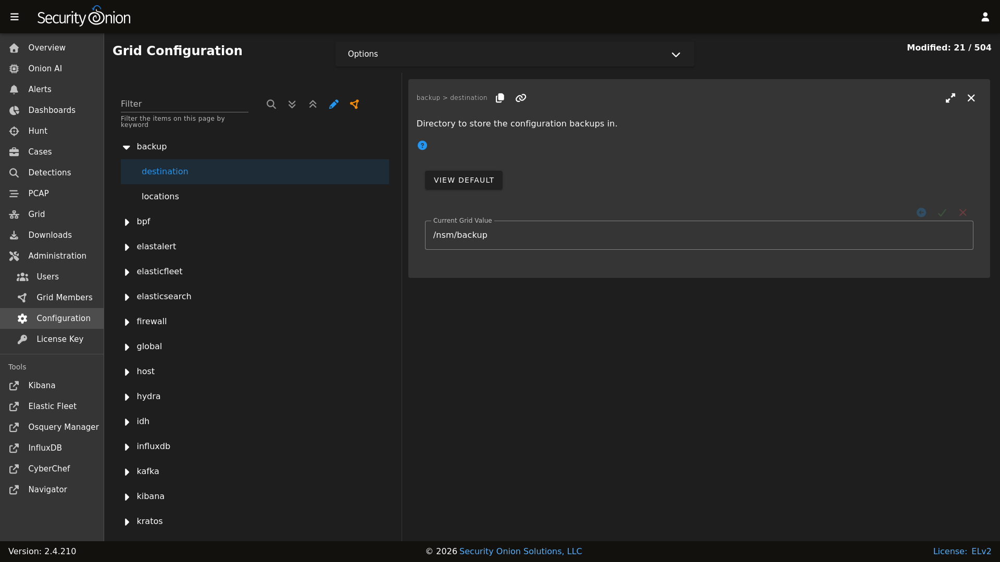

Backup
Security Onion performs a daily backup of some critical files so that you can recover your grid from a catastophic failure of the manager. Daily backups create a tar file located in the /nsm/backup/ directory located on the manager. You may want to replicate this backup directory to a location outside of your manager in case the manager ever needs to be rebuilt.
Here is what gets backed up automatically by default:
/etc/pki/- All of the certs including the CA./etc/salt/- Configuration for the Salt manager and minions./nsm/kratos/- Configuration for Kratos./nsm/hydra/- Configuration for Hydra (used for Connect API)./opt/so/saltstack/local/- Customizations done via Administration –> Configuration.
If you need to restore one or more files from backup, locate the tar backup file from the desired date and use the standard tar command to expand the file. For example, to expand the backup file from March 17, 2025:
tar xvf so-config-backup-2025_03_17.tar
This will extract the config files from the tar file into subdirectories for etc, nsm, and opt. You can then copy the needed files from those expanded subdirectories to the actual directories.
Configuration
You can configure backups by going to Administration –> Configuration –> backup.
{kind=link}

Elasticsearch
Elasticsearch data is not automatically backed up. This includes things that may be important to you like Kibana customizations and Cases data. Kibana customizations are located in the .kibana indices and Cases data is stored in the so-case and so-casehistory indices. If you have a distributed deployment with Elasticsearch clustering, then you can enable replicas to have redundancy in case of a single node failure. Of course, please keep in mind that enabling replicas doubles your storage needs.
Another option is to use Elasticsearch’s built-in support for snapshots: https://www.elastic.co/guide/en/elasticsearch/reference/current/snapshot-restore.html
This option requires that you configure Elasticsearch with a path.repo setting where it can store the snapshots. Once Elasticsearch has the path.repo setting, you should be able to log into Kibana and configure snapshots as shown in the link above. Those snapshots will then be accessible in /nsm/elasticsearch/repo/.